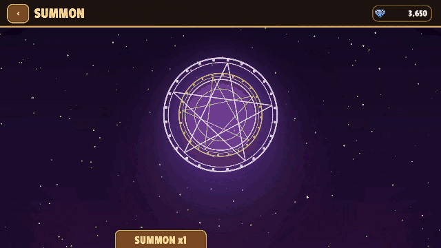

KeyTween
KeyTween은 Unity uGUI용 키프레임 UI 애니메이션 도구입니다. 애니메이션을 타임라인에서 만들어 Prefab 안에 저장하고, 이름으로 재생합니다.



개요
KeyTween에서는 Animator 클립을 만들 때처럼 타임라인에 키를 놓아 UI 애니메이션을 만듭니다. 다만 애니메이션은 클립이 아니라 Hover, Open, Close처럼 이름 붙은 상태로 Prefab 안에 저장됩니다.
주요 특징
- 별도 에셋이 없습니다. 클립이나 컨트롤러 같은 에셋이 없고, 각 트랙은 Prefab 안의 컴포넌트를 직접 가리킵니다.
- 에디터에서 만듭니다. 타임라인 창, 트랙 추가 창, 키 인스펙터, 녹화 기능으로 애니메이션을 만듭니다.
- Play 모드 없이 미리 봅니다. 미리보기는 편집 모드, Prefab 모드, Play 모드 어디서나 동작합니다.
- UI와 게임 오브젝트를 함께 움직입니다. UI 말고도 Transform, SpriteRenderer, 재질 속성, Light, Camera, AudioSource 트랙으로 월드 공간의 오브젝트를 움직입니다. 원하는 컴포넌트의 트랙을 직접 만들 수도 있습니다.
- 재생 시점을 코드 없이 정합니다. 포인터 진입, 클릭, 활성화 같은 시점을 상태마다 고릅니다.
- 코드는 한 줄이면 됩니다.
await anim.PlayAsync("Open")은 상태를 재생하고 UnityAwaitable을 돌려줍니다. 재생이 끝까지 가지 못했을 때 어떻게 끝나는지도 규칙으로 정해져 있습니다. - Prefab과 함께 움직입니다. 상태는 Prefab에 저장되어 Prefab과 함께 다닙니다. 바깥 Prefab은 안에 든 Prefab의 상태를 호출하고 그 트랙을 덮어쓸 수 있습니다. 덮어쓴 내용은 바깥 Prefab 안에서만 적용됩니다.
- 트윈 라이브러리 수준의 성능을 냅니다. 재생하지 않을 때는 비용이 들지 않고, 재생 중에도 GC 할당이 없습니다. 이징 트랙은 Burst로 계산합니다.
영상으로 보기
실제로 동작하는 모습은 다음 영상에서 볼 수 있습니다.
성능
KeyTween과 다른 애니메이션 도구의 비용을 비교한 결과입니다.
측정 결과
- IL2CPP 릴리스로 빌드한 Windows 플레이어
- 오브젝트 2,000개
- 괄호 안의 수치는 같은 값을 스크립트에서 직접 넣을 때보다 더 걸린 시간입니다. 그 방식 자체의 비용을 뜻합니다.
| KeyTween | DOTween Pro | LitMotion | Animator | AnimationUI | |
|---|---|---|---|---|---|
| 맥박 반복 (ms) | 7.69 (+0.38) | 7.71 (+0.40) | 7.66 (+0.34) | 10.16 (+2.85) | 9.31 (+2.00) |
| 목록 등장 (ms) | 1.70 (+0.04) | 1.59 (−0.06) | 1.53 (−0.13) | 5.23 (+3.57) | 2.18 (+0.52) |
| 글자 물결 100개 (ms) | 0.61 | 2.11 | 2.05 | 지원 안 함 | 지원 안 함 |
요약
- 재생 중 GC 할당이 없습니다.
- 비용은 코드 트윈 라이브러리인 DOTween Pro, LitMotion과 비슷하고 Animator와 AnimationUI보다 가볍습니다.
- 글자 효과는 비교 대상 중 가장 빠릅니다.
- 약점은 재생을 시작하는 비용입니다. 2,000개를 한 번에 다시 재생하면 2.31ms가 걸리며, LitMotion은 1.34ms입니다.
측정 방법과 전체 결과 표는 Performance와 Benchmarks에 있습니다.
라이선스
KeyTween과 샘플 리소스의 라이선스입니다.
- KeyTween: MIT
- RPG 샘플의 아이콘: game-icons.net의 것으로 CC BY 3.0 라이선스를 따릅니다. 작가 목록은
Samples/RPG/Art/CREDITS.md에 있습니다. - 샘플의 글꼴: Passion One (SIL OFL 1.1)